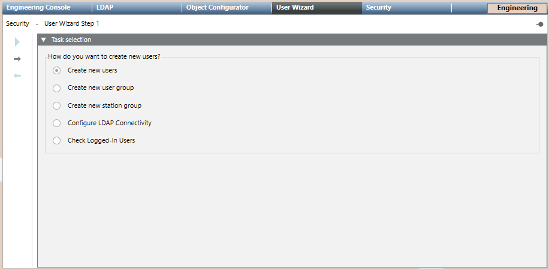

User Wizard Workspace
This section provides general reference information on the User Wizard. For related procedures, see the step-by-step section.
The User Wizard is a tool that is always available in the Primary pane of the Security node. It provides guided configuration of users and groups.
The first step is to select the user wizard tab. From there you can select different tasks and click  to proceed.
to proceed.
- Create new users: You can create a new user or copy settings from existing users; you can also create the new user group in which to insert the new user.
Once the new user is created, you can select it in System Browser under Project > System Settings > Users. - Create new user groups: You can create a new user group or copy settings from existing groups, and add one or more previously configured users to the new user group.
Once the new user group is created, you can select it in System Browser under Project > System Settings > Security. - Create new station groups: You can create a new station group or copy settings from existing groups, and add one or more previously configured users to the new station group.
Once the new station is group is created, you can select it in System Browser under Project > System Settings > Security. - Configure LDAP Connectivity: You are directed to LDAP tab in Primary pane.
- Check Logged-In Users: You are directed to the corresponding object in System Browser Project > System Settings > Users.
